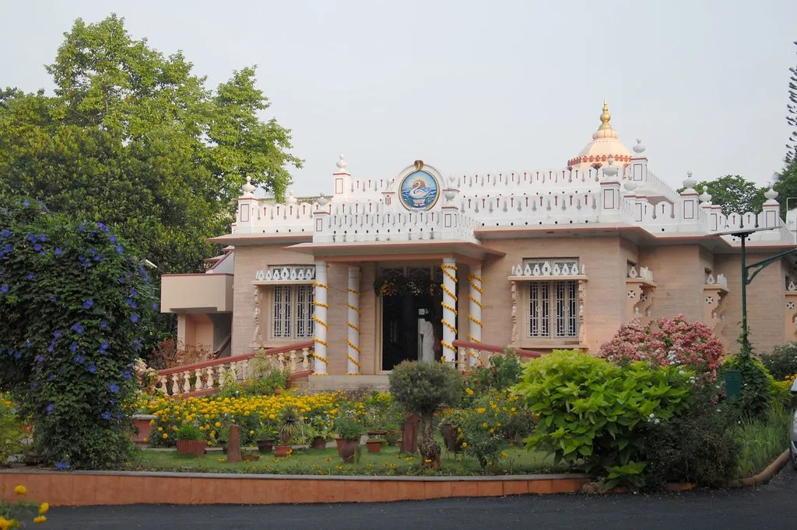
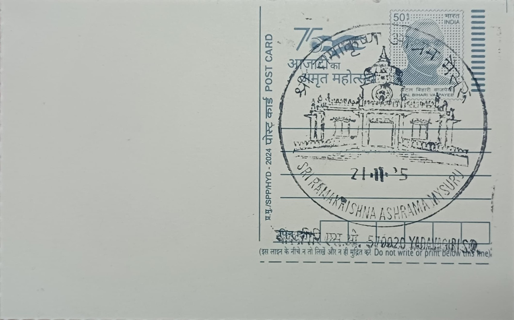
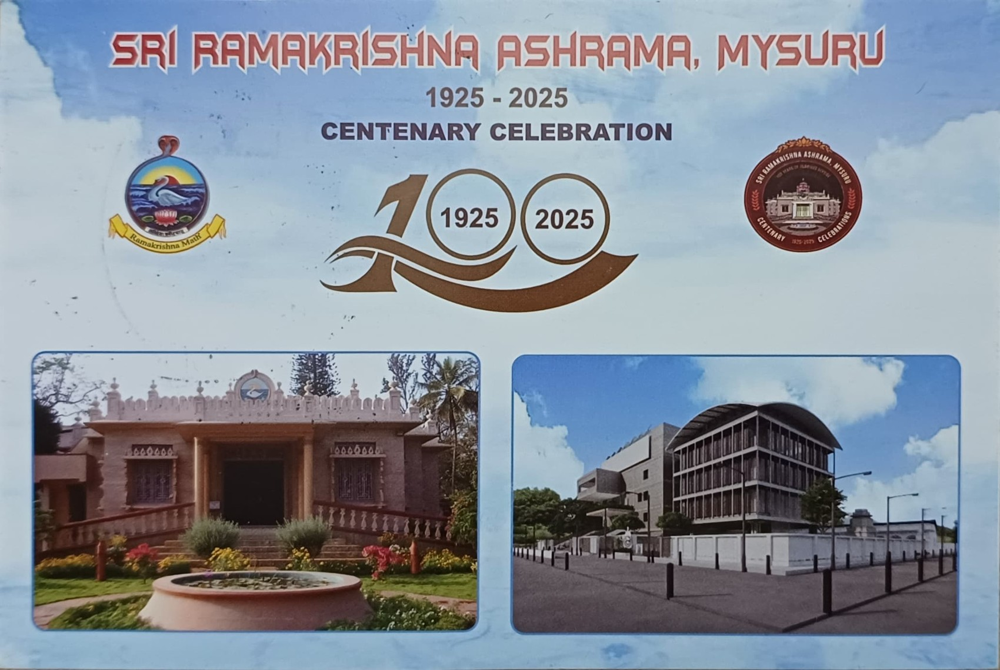
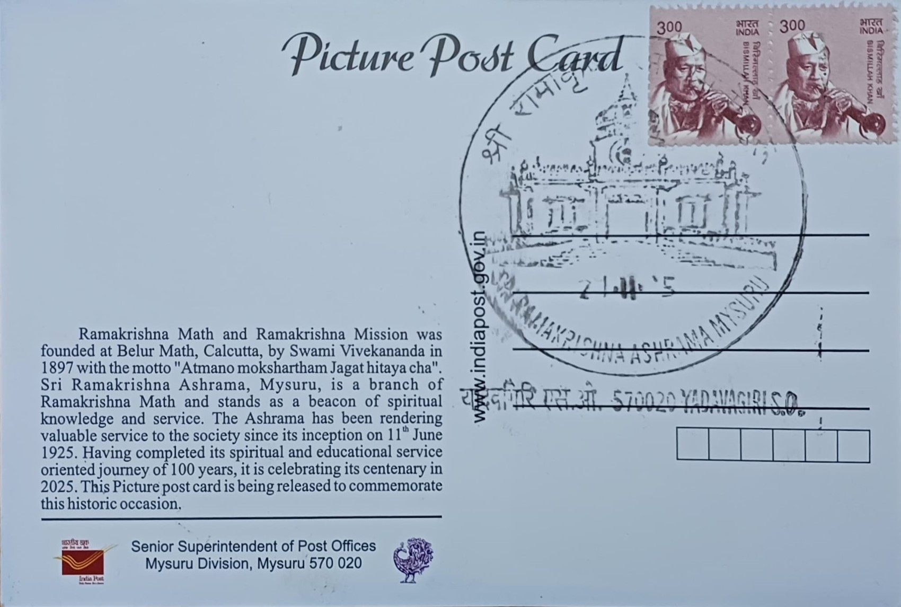
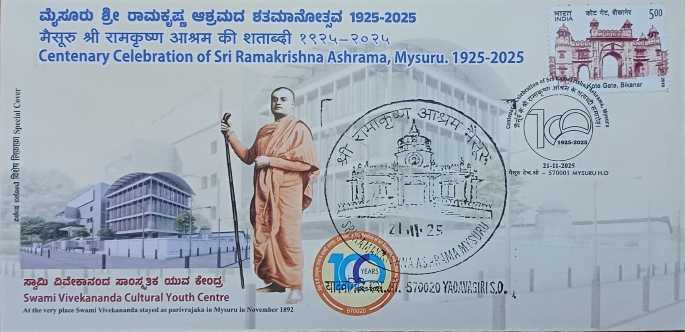

The Sri Ramakrishna Ashrama in Mysuru (Mysore) stands as a prominent spiritual and educational center, rooted in the ideology of the Ramakrishna Math and Mission. Established on June 11, 1925, the Ashrama was founded by Swami Siddheswarananda, a disciple of Swami Brahmananda. The genesis of this center is historically linked to Swami Vivekananda’s visit to Mysore in 1892, where he was hosted by the then Maharaja, Chamaraja Wadiyar X. This early connection fostered a deep bond between the royal family and the Ramakrishna Order, eventually leading to the formal establishment of the Ashrama decades later. Initially operating from a smaller premise, the institution moved to its current, expansive location in Yadavagiri in the early 1930s, largely supported by the Maharaja of Mysore, who provided the land and patronage necessary for its growth.
The development of the Ashrama into a sprawling complex of spiritual and educational activity is largely attributed to the vision of its early presidents, particularly Swami Shambhavananda. The campus is anchored by the main temple, which features a distinct architectural style blending traditional Indian motifs with the serene simplicity characteristic of the Ramakrishna Order. Over the decades, the Ashrama expanded its infrastructure to include quarters for monks, a library, and guest houses. The environment is designed to be a "forest university" or Gurukula, emphasizing silence, discipline, and communion with nature. This aesthetic and spiritual development transformed the Yadavagiri campus into a landmark of peace within the city, attracting devotees and tourists alike for meditation and spiritual retreats.
A significant arm of the Ashrama’s work is the Sri Ramakrishna Vidyashala, a residential composite junior college for boys founded in 1953. Conceived by Swami Shambhavananda, the Vidyashala was established to implement Swami Vivekananda’s ideal of "man-making education." It is renowned across India for its holistic curriculum that integrates academic excellence with physical culture, music, and moral discipline. The campus is equipped with unique facilities, including a computerized astronomical observatory, a swimming pool inaugurated by Prime Minister Jawaharlal Nehru in 1957, and extensive sports grounds. The institution focuses on character building, ensuring that students develop not just intellectually but also as responsible, ethical citizens who contribute to national development.
In 1974, the Ashrama further distinguished itself by establishing the Ramakrishna Institute of Moral and Spiritual Education (RIMSE). This unique institution was created to address the perceived gap in values education within the general academic system. RIMSE offers a Bachelor of Education (B.Ed.) program and conducts short-term courses for teachers, college students, and the general public on ethics, philosophy, and comparative religion. It is recognized as a nodal center for values education, frequently collaborating with government bodies to train educators in imparting moral values. The institute’s architecture, modeled after a traditional prayer hall, reinforces its mission to synthesize ancient spiritual wisdom with modern educational techniques.
Beyond formal education, the Ashrama is a prolific publisher of Vedanta literature, particularly in the Kannada language. It publishes Viveka Prabha, a monthly Kannada magazine that has been in circulation for decades, disseminating the teachings of Sri Ramakrishna, Holy Mother Sarada Devi, and Swami Vivekananda. The organization also engages in extensive rural welfare projects, including medical dispensaries and tribal development work in the nearby B.R. Hills region. Recently, the Ashrama marked a historic milestone with its Centenary Celebrations in November 2025, commemorating 100 years of service. This event highlighted its enduring legacy in the region, bringing together monks, devotees, and dignitaries to honor a century of spiritual and humanitarian contributions.

Inaugural Day Card, Front

Inaugural Day Card, Back

Inaugural Day Cover
| Date of Introduction | November 21, 2025 |
|---|---|
| Address | Sub Postmaster, |
| Yadavagiri SO, | |
| Mysuru (dt.), Karnataka - 570020. |